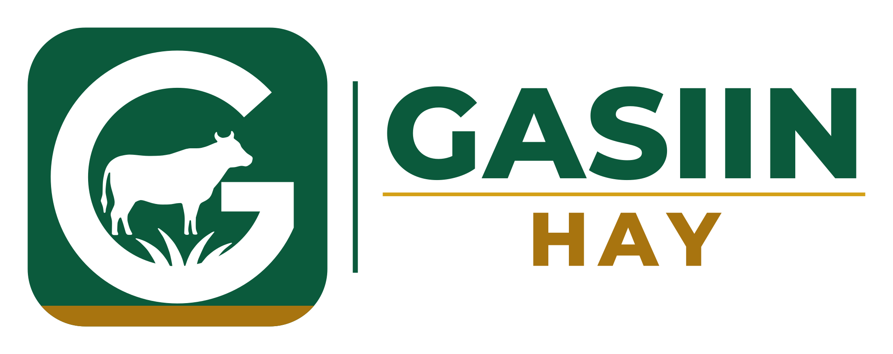

Gasiin Hay
Graded quality hay: sun-cured, dust-free forage bales harvested at peak nutritional value.
- Pack size
- 20 kg to 25 kg bales
- Best for
- Pastoralists, ranches and dairy farms needing reliable roughage
- Why it matters
- Keeps herds in condition through the dry season, when grazing fails and prices spike